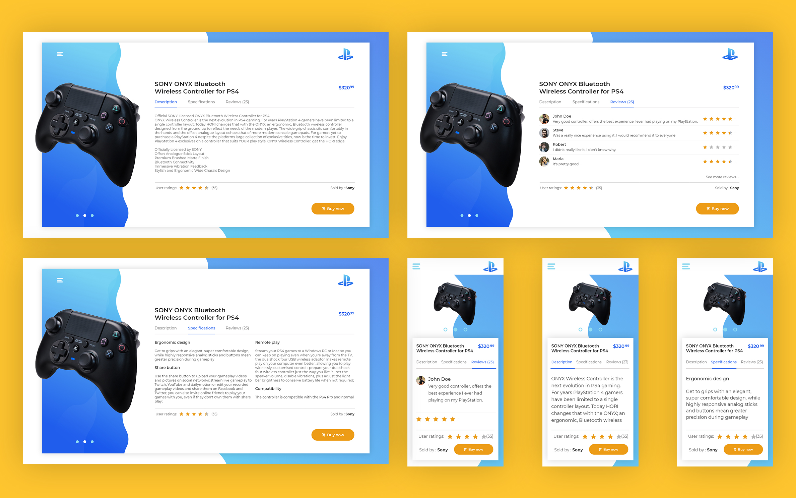

PlayStation Controller - Product Page
I’ve always been a fan of gaming, from my first console, a Game Boy Advance with popular titles such as Pokemon or Mario, to modern consoles with next generation games. This passion inspired me to create a product page for one of the most popular consoles these days, the Sony Playstation 4. For this project I kept in mind three important things that would guide me through the process: describing the product, hightlighting the specifications so the client should easily have access to them and allowing the user to express their thoughts and feelings about the product in a user reviews section.
This project required a lot of research on product pages, from what the product page should contain,how to lay the content to the way users interact with the interface. These two big questions were the ones that would outline the final result. I found the answer to the first one very quick after visiting online stores and searching for work samples on Dribbble, after that the second question was a pretty hard one since I wanted to put everything in a different light but to keep the feeling of a normal product page. I did the sketching and found a good way to lay the content in order to acquintance the user with the position of the elements so they would have a natural experience.
After having a sketch of the project, the next step is always wireframing. Wireframing is an important step because it gives both me and the client an idea of how to project will be like.
The sketch is done, the wireframe is done, all it is to do now is DESIGN! I start applying colors, adding images and working on actual design of the project.
